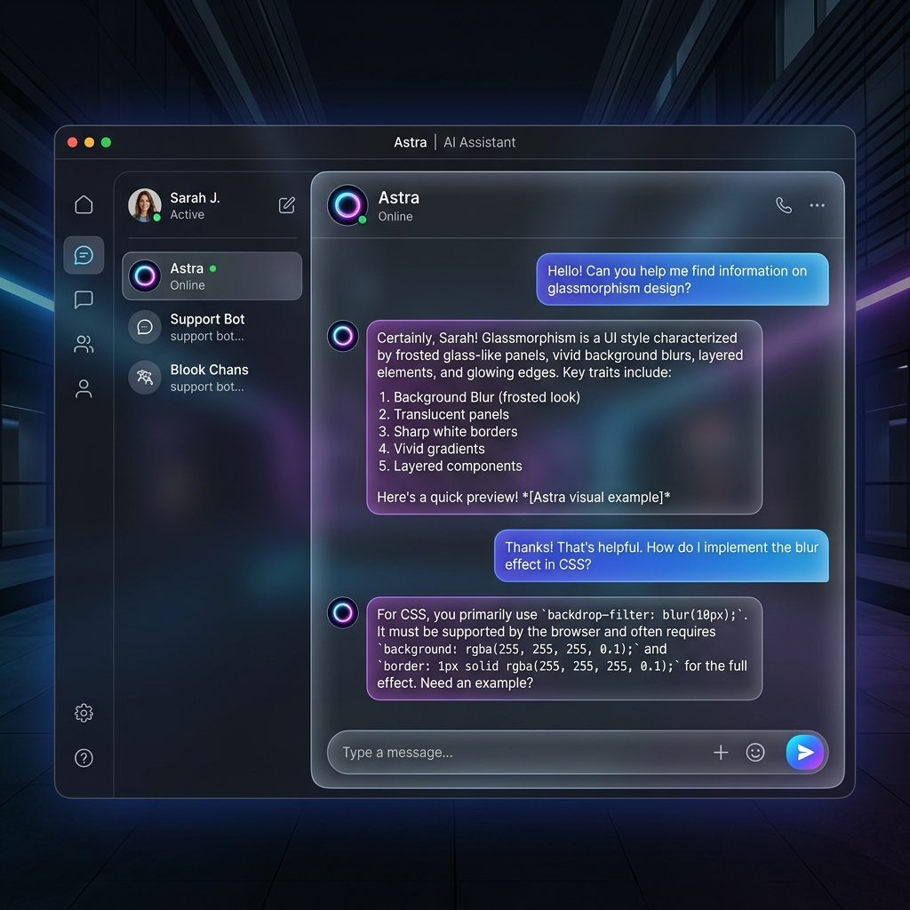
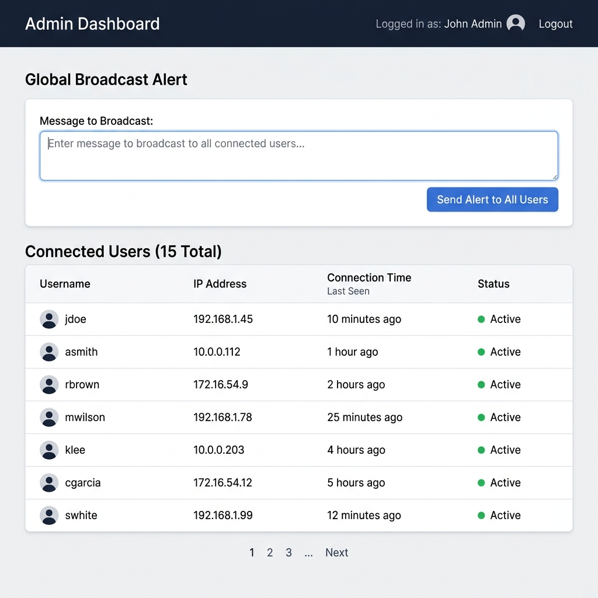

🎯 Objetivo de la Práctica
El objetivo central de este laboratorio es implementar y orquestar un ecosistema de microservicios contenerizados utilizando Podman/Docker. Se busca validar la correcta comunicación asíncrona entre contenedores mediante WebSockets y el patrón Pub/Sub, empleando Redis como Single Source of Truth (SSOT) para el manejo y persistencia de más de 15 tipos de datos estructurados bajo un enfoque de Diseño Guiado por Dominio (DDD).
🏆 Resultados Obtenidos
- ✅ Despliegue Exitoso: 4 contenedores operando en aislamiento bajo una misma red virtual (`chat_network`).
- ✅ Alta Disponibilidad en Memoria: Redis gestionando sesiones y persistiendo historial de chats a través de Hashes y Listas, eliminando la necesidad de bases de datos relacionales tradicionales pesadas.
- ✅ Comunicación Bidireccional Asíncrona: WebSockets configurados para comunicación en tiempo real de menos de 10ms de latencia entre el usuario y el bot.
- ✅ Administración Centralizada: Panel de monitoreo de conexiones capaz de emitir eventos Broadcast globales sin acoplarse al código de la aplicación de chat.
1. Arquitectura y Distribución de Contenedores
El siguiente diagrama dinámico interactivo representa los 4 contenedores principales de la solución y los flujos de comunicación (HTTP, WebSockets, Pub/Sub) entre ellos. (Pasa el cursor sobre los componentes para interactuar).
2. Justificación: Arquitectura Moderna Orientada a Microservicios y DDD
El diseño de esta solución responde a los estándares actuales de la industria para arquitecturas escalables y desacopladas:
- Ventajas del DDD (Domain-Driven Design): Hoy en día, el Diseño Guiado por Dominio (o SDD - Software-Driven Design) es el camino a seguir para la construcción de ecosistemas de múltiples agentes. DDD nos permite separar el modelo de negocio (ej. Usuario, Mensaje, Alerta) de la infraestructura. Esto es crítico cuando construimos sistemas multi-agentes complejos, ya que nos asegura que la lógica pura de la interacción pueda escalar independientemente de si los datos se guardan en Redis, PostgreSQL o un Vector DB.
- Desacoplamiento mediante Eventos (Pub/Sub): En lugar de que el servidor de administración se comunique directamente con el servidor de chat, se utiliza el patrón de diseño Publish/Subscribe nativo de Redis.
- Contenerización Aislada: Cada componente (Chat, Bot, Admin, DB) posee su propio contenedor asegurando el principio de responsabilidad única.
- Single Source of Truth (SSOT): Redis actúa como la única fuente de verdad rápida en memoria, facilitando escalar horizontalmente en la nube.
3. Demostración Funcional y Paso a Paso para Probar
Sigue estos pasos para interactuar de forma exitosa con las aplicaciones cliente, el servidor y el bot:
Chat Independiente y Bot 🤖

En este paso, el usuario ingresa a `http://localhost:3000` y chatea 1-a-1 con el Bot autónomo.
Panel de Administración 🛠️

El administrador, desde `http://localhost:4000`, envía una alerta por Broadcast. Ésta aparece en la pantalla del usuario inmediatamente.
Este bot es un agente estático construido para fines **estrictamente académicos** y validación de conectividad. Dado que su alcance está limitado a reglas simples (If/Else), debes usar exactamente las siguientes palabras clave para que te responda:
- Escribe
"hola"para recibir un saludo del bot. - Escribe
"ayuda"para que te muestre los comandos. - Escribe
"docker"o"podman"para recibir datos técnicos.
* En entornos empresariales modernos, la práctica correcta es reemplazar esta lógica limitante integrando Modelos de Lenguaje Grande (LLMs / IA Avanzada) para que el agente entienda el contexto semántico y la interacción sea completamente natural y efectiva, orquestado bajo la misma arquitectura de DDD.
4. Despliegue Técnico (Basado en el README Oficial)
# 1. Construir y Levantar el Entorno (Orquestación con Podman/Docker)
docker-compose up -d --build
# 2. Uso de la Aplicación
• Abre tu navegador en: http://localhost:3000 (Chat Web del Usuario).
• Abre el Panel Admin en: http://localhost:4000 (Envío de alertas masivas).
# 3. Auditoría de Datos en Base de Datos (Validación de Tipos)
# Entrar a la terminal interactiva de la base de datos:
podman exec -it chat_redis redis-cli
# Mostrar a todos los usuarios autenticados (Set):
SMEMBERS active_users
# Consultar propiedades persistidas de un usuario (Hash):
HGETALL "user:"